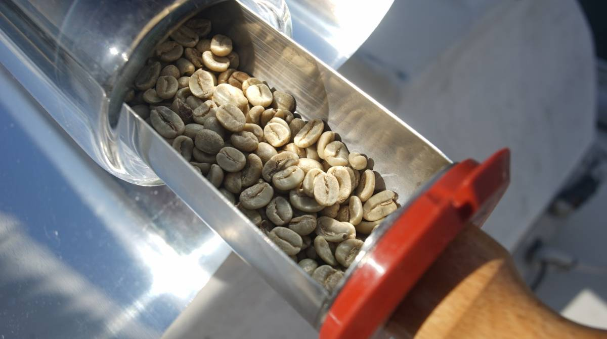
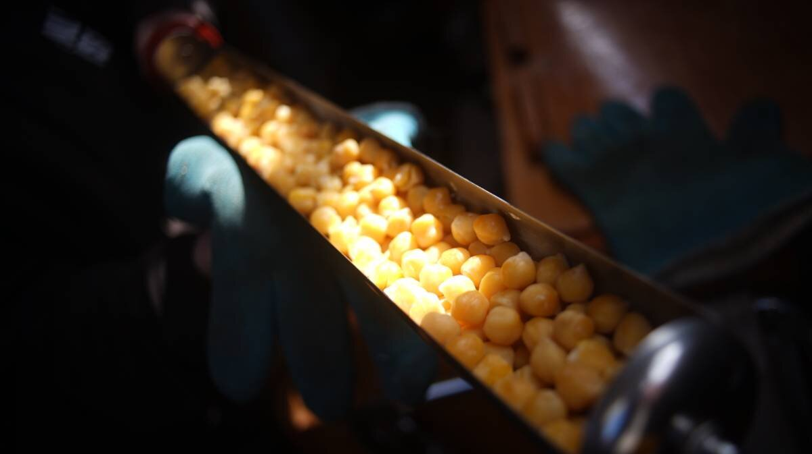

solar cooking experiment
2023.11.30
Salish Sea

A summer of solar cooking
In the spring of 2023 we learned about solar evacuated tube cooking(See page for more details about solar tubes), an efficient way of preparing food with the sun. We spent our first summer experimenting with such a cooker, in which we learned to plan our meals with the weather.
We tested the solar cooker while in the Salish Sea, where summer daytime temperatures range from 12-32°C. We also experimented in 5°C temperatures.
We prioritized the use of the solar cooker when preparing foods with long cooking times, like brown rice, beans, potatoes, seitan, cake and bread. It would have been possible to prepare all parts of a meal with the solar cooker, but we didn't want it to become a ball and chain, keeping us onboard all day. Solar cooking isn't terribly demanding, but it requires some attention.
- On days of full sun, we could cook one full meal. In the morning(0900-1000) we'd prepare chickpeas, then bake bread in the afternoon(anytime between 1300-1700).
- On days of Sun with overcast periods, we'd cook food with quick-cooking times like white rice, brown lentils, potatoes or seitan.
- On very rainy/heavily overcast days, solar cooking was not possible.
If planning to cook foods with long wait times, such as bread(needs time to rise), or beans(needs soaking), we would check the forecast to make sure the next day's weather would permit it. If there was sun, we'd pre-soak the beans or pre-mix the dough before bed so everything would be ready to cook come morning.

The closer the sun gets to the horizon, the harder it is to find a good angle for the cooker, which is why it is better to prepare meals in the morning or in the early afternoon.
We liked to place the cooker on the bow, on the space above the anchor locker just ahead of the forward hatch.
That space is relatively flat, which keeps the cooker leveled and prevents spills (if cooking beans, before they have time to soak in the cooking water). On a rounded-surface, the cooker can rock from side to side.

When is the food ready?
Cooking times on a very sunny day resemble those from cooking on a stovetop(or in an oven), without using a pressure cooker. The reason the cooking time is comparable is because the tray can't hold a lot of food, it is sized for two people. A larger diameter tube, which could hold more food, would result in longer cooking times.
- A half-cake recipe takes about 30 minutes
- A half-baguette recipe takes an hour
- A 1/2 cup of pre-soaked black beans takes 1-1h30 hours
- Etc...
1 cup of pre-soaked chickpeas was the max quantity for a solar tube with an inner diameter of 5.5cm(17in). The tube can only accommodate half bread or cake recipes(we cook them in two batches one right after the other, see "baking with the sun").
Your nose knows best. In the summer Pino's forward hatch is always open, and because a boat at anchor points in the wind the breeze carries the smell of the cooking food inside. The smell emanating from the bow is a clear indication of whether or not the meal is ready.
We began to rely on our noses instead of looking at the time.
Time doesn't mean much when solar cooking because sun cookers don't put out a constant heat like a traditional oven, the temperature inside the tube changes depending on cloud coverage, or if the boat(and the cooker) move out of alignment for too long.
Obstacles to cooking

Land obstructions. When anchored in bays that are surrounded by tall mountains the sun sets early, cutting down on possible cooking hours. When Pino is stern-tied to a tree, or to a rock face, the boat is still and it's easier to set the cooker, but proximity to shore also means that the land itself will eventually cast a shadow.
When stern-tied in Roscoe Bay the sun fell behind the tree line we were tied to at around 1700 everyday. Boats tied to the opposite side of the bay had more sun in evenings but in the morning would have to wait for the sun to rise above the tree line.
Windy days. On a sunny but blustery day a boat will yaw and swing, causing the cooker to repeatedly go out of alignment with the sun, but the wind direction doesn't change and so the boat always returns to the same position. Swinging at anchor didn't alter the cooking time too much.
We have cooked food on the bow in a near-gale(seebeaufort scale) without any issues, although we liked to place stoppers(shoes, or ropes) at the foot of the cooker. With food in the tray the cooker becomes bottom heavy and won't tip easily, even when the reflectors are near-vertical, but we preferred to add stoppers or to tie short lengths of rope to it just so we wouldn't have to think about it. Evidently, cooking in anything more than a near-gale is a bit foolhardy. It is important to note that the reflectors on our solar cooker are not very large, designs with larger reflectors(true for designs that don't use solar evacuated tubes, like parabolic cookers) may catch in the wind too much and get blown off the deck.
Calm days. Cooking on a calm day, or when the wind was unstable, was challenging because the boat's position was ever changing. On a calm day a boat "walks" around its anchor on the seafloor(this movement is worse with an all-rope rode, the weight of all-chain restricts the radius a bit more). The wake from a passing boat or dinghy was often enough to push the boat into a new position, which meant having to re-adjust the cooker constantly. On calm days, solar cooking occupied more of our time because of the constant re-aligning.
Shadows. Pino's bow was the best spot for the solar cooker, but even this spot had its drawbacks. On a day when the wind direction kept the boat in line with the sun the furling headsail would cast a big shadow on the cooker. Other times the sun was behind the boat with the mast in the way.
We've experimented with placing the cooker in the cockpit, but the bimini didn't always make it easy to get sun. No part of our boat is 100% dependable at all times, but in all, we found the bow to be the most reliable spot.
Dry foods can burn fast

Foods that don't have a lot of moisture, like coffee beans and sunflower seeds, cook fast and require careful monitoring. On a sunny day temperatures rise quickly and can burn the dry beans and seeds.
Our noses would tell us when the cooker got to temperature, after which we would check on the food every 10 minutes.
Roasting coffee with the sun
Yes. It works. Our friend Cathos gave us a bag of green coffee beans and we decided to try roasting them in the solar cooker.
As mentioned above, it requires constant monitoring, but it is worth the extra attention.

The first batch was too light, but the second was just right(we prefer dark roasts).


Roasting coffee beans in a solar cooker is a very joyous, but terribly distracting experience. It is difficult to focus on work with the smell of freshly-roasted beans wafting through the cabin.

That first cup of freshly-roasted coffee was very good.
High temperatures

Our friend Josh lent us his electronic temperature reader so we could measure the heat inside of the tube on a sunny summer day. The above temperature(216°C/420°F) was measured in early June at around 1100.
The solar cooker's outer tube is cold to the touch, but the inside tray can get dangerously warm. One day we dropped the end of the cooking tray on Rek's leg and it left a very bad burn. We like to keep oven mitts outside when cooking, so we can lay the tray on it when the food is done, or if we need to stir/flip items in it.
Baking with the sun

Using parchment paper when baking. When cooking bread we mixed full recipes but would cut the dough in half, cooking them separately so the bread would not expand too much in the tube. If food expands too much the tray can get stuck inside the glass tube. When making bread, or cake, we always line the tray with parchment paper, with the paper curling over the contents of the tray so that the dough won't stick to anything.
Bread takes about 2 hours total, 1 hour per baguette, with each baguette flipped every 30 minutes(one end of the cooker cooks at higher temperatures than the other).

A full "tube cake" recipe can take 1 hour, or 30 minutes per half, yielding two beautiful tube cakes. To cook a cake we line the tray with parchment paper and spoon in the uncooked batter evenly. As with baking in a traditional oven, check after 25-30 minutes with a knife to see if it is cooked all the way through.
Getting the cake out without breaking it(due to it being a long thin tube) is difficult, but possible, it helps to flop it onto a cutting board or dish matching the length of the tray.
Cleaning the cooker
We did not use the cooker to reheat pasta sauce, which could splash and encrust the inside of the tube. Cleaning the tube isn't too bothersome, but it is more challenging than cleaning a bowl (a human arm can't find inside it).
If the tube is encrusted with dried bean juice, or pasta sauce, and that food is cooked into it again, the tray may be difficult to pull out because it is a tight, tight fit, and trapped food further restricts that space.
After cooking beans we would wet the inside of the tube thoroughly, and then use a special brush(that screws onto the end of the tray) to clean it, turning the tray(and brush) from side to side so that its edges could scrape the caked bits away. We try not to do full turns with the tray so as to not accidentally unscrew the brush and have it get stuck in the tube.
Advantages
Keeps heat outside. It keeps unwanted heat outside in the summer. Using a pressure cooker inside steams up the boat. We only used the pressure cooker once this summer, as opposed to using it every 2 days(like in the winter).
Reduces use of LPG. On a sunny day we don't have to worry about running out of fuel, the solar cooker can run as long as there is sun.
When the season was over, we found that our LPG tank still had plenty of fuel. Usually, we go through a 20lbs tank in 4-5 months. We solar cooked almost every day.
Failures?
The only food we couldn't cook in the solar cooker was soybeans. Soybeans have a very long cooking time, they spit and foam and make a great big mess (our deck was covered in bean juices). We left them for 3 hours once with no apparent end in sight. We also tried cracking and soaking the beans prior to cooking them, but it still took too long.
After repeated failures, we decided it wasn't worth it and instead continued to cook other beans like black beans, and kidney beans(chickpeas and lentils also cook well in the solar cooker).
Securing the cooker while sailing

Evacuated solar tubes are made of strong borosilicate glass, but can still shatter. We installed two stainless steel hooks on the inside of the anchor locker in the v-berth, and hung the cooker there during transits.
We prefer not to leave the cooker outside when it is not in use.
What we cooked in it
As mentionned previously, we found the solar cooker to be most useful when preparing foods with long-cooking times.
This summer we cooked...
Black beans, kidney beans, brown lentils, bread, chocolate cake, chocolate chip cake, beets, potatoes, seitan, coffee(roasted green beans), sunflower seeds, calrose brown rice, chickpeas, etc...

We look forward to experimenting with it again next summer.
Our experiments
- Mix of potatoes, tofu and tomatoes.
Conditions: Sunny. 5-6°C, light breeze.
Cooking time: Started at 10h30, stopped at 11h40.
Date: 2023.03.25. - Seitan.
Conditions: Overcast. 5-6°C, moderate breeze in 2nd hour.
Cooking time: Started at 10h10, stopped at 12h10.
Date: 2023.03.26. - Chickpeas.
Conditions: Sunny. 6°C, light breeze.
Cooking time: Started at 9h50, stopped at 11h20.
Date: 2023.03.27. - Calrose Brown Rice.
Conditions: Sunny. 11°C, moderate breeze.
Cooking time: Started at 10h37, stopped at 11h40.
Date: 2023.03.28. - Ground beets and spices.
Conditions: Sunny. 12°C, fresh breeze.
Cooking time: Started at 16h00, stopped at 17h00.
Date: 2023.03.29. - Baguette(left to rise overnight).
Conditions: Sunny. 17°C, no wind.
Cooking time: Started at 12h15, flipped baguette around at 12h50, stopped at 13h15.
Date: 2023.05.10.
Notes: 3 cup flour recipe, cooked in two separate batches with dough wrapped in parchment paper. - Roasted green coffee beans.
Conditions: Sunny. 19°C, light breeze.
Cooking time: Started at 9h30, stopped at 11h (tossed beans around a few times).
Date: 2023.05.21.
Notes: Packed too many green beans at once, cooking time might have been shorter with fewer. Result was a light roast. Was delicious. See result. - Roasted sunflower seeds.
Conditions: Sunny. 17°C, light breeze.
Cooking time: Started at 13h30, stopped at 14h30.
Date: 2023.05.21.
Notes: Left them too long, tube was already hot from cooking the coffee beans. I burned them a little. Temperature in the stove was measured to be 217°C. - Chocolate cake.
Conditions: Overcast. 19°C, light breeze.
Cooking time: Started at 13h40, stopped at 14h30.
Date: 2023.05.24.
Notes: Baked cake in two parts, took a long time to get hot because it was overcast, but then the sun came out for the second cake and it baked under 30 minutes. See result (yes, yes. It looks like we took a shit on a piece of parchment paper). - Soybeans.
Conditions: Sunny. 28°C, light breeze.
Cooking time: Started at 10h30, stopped at 14h.
Date: 2023.07.01.
Notes: We cracked some whole soybeans, hoping they would cook faster (first time we tried to cook soybeans, they were there for 3 hours and weren't done). After 3 hours, they were still tough, and they make a mess (super sticky and annoying to clean). Decided to never try to cook soybeans in here again, too messy, too long. Will stick to other kinds of beans. - Lentils and potatoes.
Conditions: Overcast. 24°C, fresh breeze.
Cooking time: Started at 10h30, stopped at 11h30.
Date: 2023.07.12.
Notes: Overcooked, but still delicious. Was overcast at first, then got sunny (why i left it on longer) - Black beans.
Conditions: Overcast. 25°C, fresh breeze.
Cooking time: Started at 10h30, stopped at noon.
Date: 2023.07.13.
Notes: Soaked beans overnight, was overcast at first but then got sunny (like yesterday). Beans may cook faster otherwise.